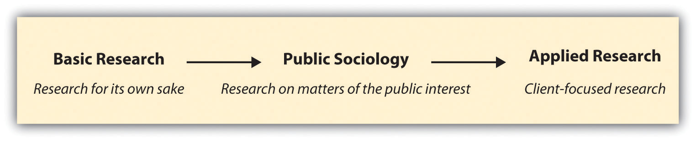

In Section 1.1 "How Do We Know What We Know?", we considered a variety of ways of knowing and the philosophy of knowing. But this is a sociology text rather than a philosophy text. And sociology is a science, or more specifically a social science. In this section, we’ll take a closer look at the science of sociology and some specific considerations of which sociological researchers must be aware.
The sources of knowledge we discussed in Section 1.1 "How Do We Know What We Know?" could have been labeled sources of belief. In sociology, however, our aim is to discover knowledge. Because sociology is a scienceA way of knowing that attempts to systematically collect and categorize facts or truths., while we may examine beliefs in order to understand what they are and where they come from, ultimately we aim to contribute to and enhance knowledge. Science is a particular way of knowing that attempts to systematically collect and categorize facts or truths. A key word here is systematically; conducting science is a deliberate process. Unlike the ways of knowing described in Section 1.1 "How Do We Know What We Know?", scientists gather information about facts in a way that is organized and intentional and usually follows a set of predetermined steps.
More specifically, sociology is a social science. In other words, sociology uses organized and intentional procedures to uncover facts or truths about society. As you probably recall from your introductory sociology class, sociologyThe scientific study of humans in groups. is the scientific study of humans in groups. Sociologists study how individuals shape, are shaped by, and create and maintain their social groups. The groups that sociologists study may be as small as individual families or couples or as large as whole nations. The main point, however, is that sociologists study human beings in relation to one another. In Chapter 2 "Linking Methods With Theory", we’ll explore how variations within sociology such as theoretical perspective may shape a researcher’s approach. For now the important thing to remember is what makes up sociology as a whole. Two key elements are its focus on human social behavior and its scientific approach toward understanding that behavior.
A New Yorker cartoon once portrayed a little boy looking up at his father while the father tells him, “I’m a social scientist, Michael. That means I can’t explain electricity or anything like that, but if you ever want to know about people I’m your man” (http://www.cartoonbank.com/1986/im-a-social-scientist-michael-that-means-i-cant-explain-electricity-or-anything-like-that-/invt/116658). As the cartoon implies, sociologists aim to understand people. And while the cartoon may also imply that sociologists don’t have much to contribute that will be of interest to others, hopefully you will be convinced this is not the case by the time you finish this text. But first, let’s move on to a few specific considerations of which all social scientists should be aware.
One of the first and most important things to keep in mind about sociology is that sociologists aim to explain patterns in society. Most of the time, a pattern will not explain every single person’s experience, a fact about sociology that is both fascinating and frustrating. It is fascinating because, even though the individuals who create a pattern may not be the same over time and may not even know one another, collectively they create a pattern. Those new to sociology may find these patterns frustrating because they may believe that the patterns that describe their gender, their age, or some other facet of their lives don’t really represent their experience. It’s true. A pattern can exist among your cohort without your individual participation in it.
Let’s consider some specific examples. One area that sociologists commonly investigate is the impact of a person’s social class background on his or her experiences and lot in life. You probably wouldn’t be surprised to learn that a person’s social class background has an impact on his or her educational attainment and achievement. In fact, one group of researchers (Ellwood & Kane, 2000) in the early 1990s found that the percentage of children who did not receive any postsecondary schooling was four times greater among those in the lowest quartile income bracket than those in the upper quartile of income earners (i.e., children from high-income families were far more likely than low-income children to go on to college).Ellwood, D., & Kane, T. (2000). Who gets a college education? Family background and growing gaps in enrollment. In S. Danziger & J. Waldfogel (Eds.), Securing the future (pp. 283–324). New York, NY: Russell Sage Foundation. Another recent study found that having more liquid wealth that can be easily converted into cash actually seems to predict children’s math and reading achievement (Elliott, Jung, Kim, & Chowa, 2010).Elliott, W., Jung, H., Kim, K., & Chowa, G. (2010). A multi-group structural equation model (SEM) examining asset holding effects on educational attainment by race and gender. Journal of Children & Poverty, 16, 91–121.
These findings, that wealth and income shape a child’s educational experiences, are probably not that shocking to any of us, even if we know someone who may be an exception to the rule. Sometimes the patterns that social scientists observe fit our commonly held beliefs about the way the world works. When this happens, we don’t tend to take issue with the fact that patterns don’t necessarily represent all people’s experiences. But what happens when the patterns disrupt our assumptions?
For example, did you know that teachers are far more likely to encourage boys to think critically in school by asking them to expand on answers they give in class and by commenting on boys’ remarks and observations? When girls speak up in class, teachers are more likely to simply nod and move on. The pattern of teachers engaging in more complex interactions with boys means that boys and girls do not receive the same educational experience in school (Sadker & Sadker, 1994).Sadker, M., & Sadker, D. (1994). Failing at fairness: How America’s schools cheat girls. New York, NY: Maxwell Macmillan International. You and your classmates, both men and women, may find this news upsetting.
Objectors to these findings tend to cite evidence from their own personal experience, refuting that the pattern actually exists. The problem with this response, however, is that objecting to a social pattern on the grounds that it doesn’t match one’s individual experience misses the point about patterns.
Another matter that social scientists must consider is where they stand on the value of basic as opposed to applied research. In essence, this has to do with questions of for whom and for what purpose research is conducted. We can think of basic and applied research as resting on either end of a continuum. In sociology, basic researchSociology for sociology’s sake; research that is motivated solely by researcher interest. is sociology for sociology’s sake. Nothing more, nothing less. Sometimes researchers are motivated to conduct research simply because they happen to be interested in a topic. In this case, the goal of the research may be to learn more about a topic. Applied researchResearch that is conducted for some purpose beyond or in addition to researcher interest. lies at the other end of the continuum. In sociology, applied research refers to sociology that is conducted for some purpose beyond or in addition to a researcher’s interest in a topic. Applied research is often client focused, meaning that the researcher is investigating a question posed by someone other than her or himself. What do you think the purpose of sociology should be? Should sociologists conduct research for its own sake, if it has some identifiable application, or perhaps for something in between?
A trend some might say lies near the middle of the basic/applied continuum is public sociology. Public sociologyThe application of sociological theories and research to matters of public interest. refers the application of sociological theories and research to matters of public interest. You might recall from your introductory sociology class that sociology’s origins in fact lie in matters of public interest: the desire to understand the consequences of industrialization and to find solutions for the ills of society (Henslin, 2006).Henslin, J. M. (2006). Essentials of sociology: A down-to-earth approach (6th ed.). Boston, MA: Allyn and Bacon. However, all sociologists have never agreed on what the purpose of sociology is or should be. The pendulum of interest in basic research to a more publicly focused sociology has swung back and forth over the many years that sociology has existed (Calhoun, 2007).Calhoun, C. (Ed.). (2007). Sociology in America: A history. Chicago, IL: University of Chicago Press. Since 2004, when then-president of the American Sociological Association (ASA) Michael Burawoy (2005)Burawoy, M. (2005). 2004 presidential address: For public sociology. American Sociological Review, 70, 4–28. delivered a talk to the ASA membership imploring sociologists to become more publicly engaged in their work, a new wave of debate about the purpose of sociology began to build. Today, some argue that public sociology puts too little emphasis on sociology as a science,See, for example, Mathieu Deflem’s arguments against public sociology on his website: http://www.savesociology.org. while others assert that sociology is, has been, and must remain public (Jeffries, 2009).Jeffries, V. (Ed.). (2009). Handbook of sociology. Lanham, MD: Rowman & Littlefield. While there are no easy answers here, it is worth taking some time to think about your position on this issue. Your perspective on the purpose of sociology will shape the questions you ask in your research and may even shape how you attempt to answer those questions.
Figure 1.7 Continuum of Sociological Research Types and Goals
One final consideration that social scientists must be aware of is the difference between qualitative and quantitative methods. Qualitative methodsWays of collecting data that yield results such as words or pictures. are ways of collecting data that yield results such as words or pictures. Some of the most common qualitative methods in sociology include field research, intensive interviews, and focus groups. Quantitative methodsWays of collecting data that can be represented by and condensed into numbers., on the other hand, result in data that can be represented by and condensed into numbers. Survey research is probably the most common quantitative method in sociology, but methods such as content analysis and interviewing can also be conducted in a way that yields quantitative data. While qualitative methods aim to gain an in-depth understanding of a relatively small number of cases, quantitative methods offer less depth but more breadth because they typically focus on a much larger number of cases.
Sometimes these two methods are presented or discussed in a way that suggests they are somehow in opposition to one another. The qualitative/quantitative debate is fueled by researchers who may prefer one approach over another, either because their own research questions are better suited to one particular approach or because they happened to have been trained in one specific method. In this text, we’ll operate from the perspective that qualitative and quantitative methods are complementary rather than competing. While these two methodological approaches certainly differ, the main point is that they simply have different goals, strengths, and weaknesses. We’ll explore the goals, strengths, and weaknesses of both approaches in more depth in later chapters.
In sum, social scientists should be aware of the following considerations:
Feeling confused about how qualitative and quantitative methods can be complementary? Check out this comic strip that depicts the quantitative Team Number Validators joining forces with the qualitative Team Alpha Defenders as they fight to bring down the villain Dr. Plagiarism in the name of academic justice: